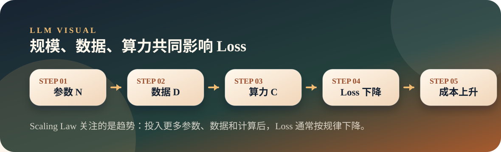

从零开始理解大模型
09. Scaling Law：为什么“大力出奇迹”有效
Scaling Law 描述模型规模、数据规模、计算量和 Loss 之间的经验关系，解释了为什么更大模型通常更强。
Scaling LawModel SizeLoss
Thesis
文章主旨
Scaling Law 描述模型规模、数据规模、计算量和 Loss 之间的经验关系，解释了为什么更大模型通常更强。
为什么行业不断把模型做大、数据做多、算力堆高？不是因为迷信规模，而是经验上规模扩大后 Loss 会按规律下降。
Visual
图解主线

Scaling Law 像工程里的压测曲线：不是保证每次都线性变好，但能告诉你继续投入规模时，大概率会往哪个方向走。
Explain
概念展开
这一页先把文章里的关键判断讲顺，再用一个小观察帮助落地。
- 模型能力提升常常来自参数、数据和算力共同扩大。
- Scaling Law 关注的是趋势，不是某一次实验的绝对值。
- 规模带来能力，也带来训练、推理、成本和安全问题。
- “大力出奇迹”背后是可观察的经验规律。
- 参数量不是唯一变量，数据量和计算量同样关键。
- 真实系统要在效果、成本、延迟之间做取舍。
Small Check
可选小实验
用几个不同大小的微型模型，观察参数量增加时 Loss 的整体趋势。 实验只用于观察现象，不作为本页主线。
可选实验命令
python3 llm/09-scaling-law/scaling_law.py --steps 50- 脚本会训练多组不同参数量的小模型。
- 结果表会打印参数量、Loss、log 参数量和 log Loss。
- 如果训练步数足够，通常能看到更大模型 Loss 更低的趋势。
- 这个实验只演示趋势，不等同于真实大模型训练结论。
Map
前后关系
这一页不是孤立知识点，它在整条大模型主线里承担一个具体位置。
- 上一页「上下文窗口」提供了前置概念，这一页把它推进到「Scaling Law」。
- 下一页「LLM 到 Agent」会沿着这条线继续展开，避免把单个概念孤立记忆。
- 本页只抓一个关键词：Scale + Loss。现场讲解时先讲文章结论，再用图示解释为什么。
Boundary
易混点
- 不要把小实验的数字当成真实大模型定律，只看趋势。
- 模型变大并不自动解决数据质量和对齐问题。
- 规模收益会有边际成本，工程上必须算账。
Extend
继续阅读
教学页以讲清文章为主；完整原文与配套脚本保留在仓库中，方便分享后继续查阅。